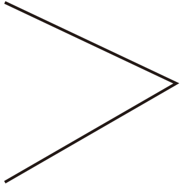
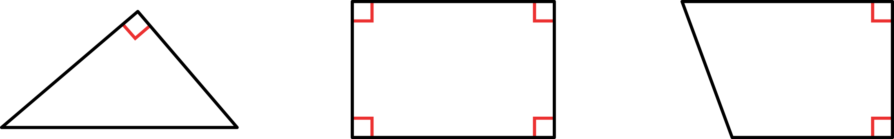

확인 문제
시작
확인
문제
문제 1
문제 2
문제 3
문제 4
문제 5
문제 6
문제 7
문제 8
직각을 찾아
표 하시오.
삼각자를 이용하여 주어진 점을 꼭짓점으로 하는 직각을 완성해 보세요.
직각의 개수가 가장 많은 도형에
표 하시오.
직각을 찾아 기호를 쓰시오.
ㄱ

ㄴ
ㄷ
ㄴ
직각을 모두 찾아 표시해 보시오.
직각의 수가 많은 순서대로 쓰시오.
ㄱ
ㄴ
ㄷ
ㄷ
,
ㄱ
,
ㄴ
모눈종이에 점 ㄱ을 꼭짓점으로 하는 직각을 그리시오.
예
친구들이 설명하고 있는 시각을 구하시오.
긴바늘이 12를 가리킵니다.
5시와 11시 사이의 시각입니다.
긴바늘과 짧은바늘이 이루는 각은 직각입니다.
9시
삼각자의 직각인 부분을 이용하여 직각을 찾습니다.
주어진 점에 삼각자가 직각인 부분을 대고 따라 그립니다.

1개
4개
2개